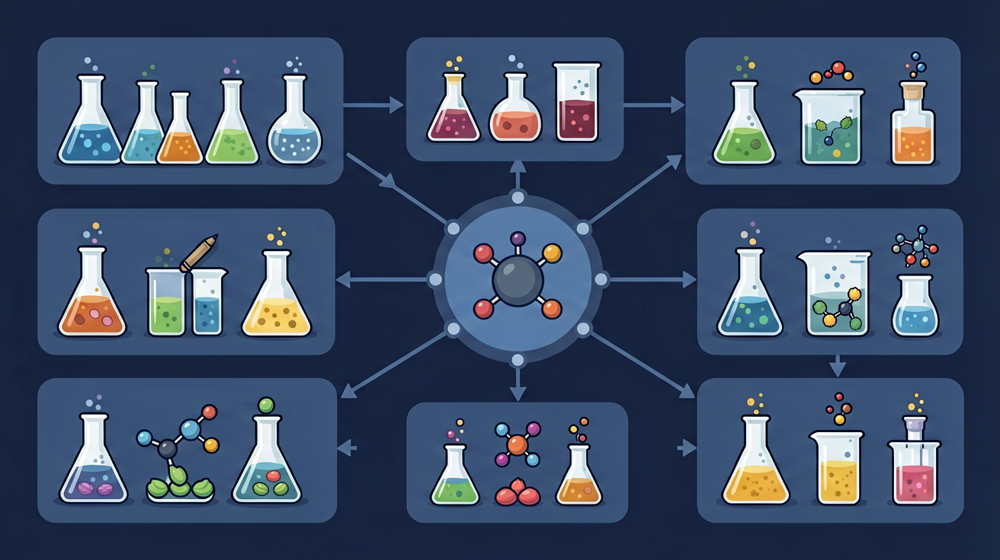

Gallery
v1.1.0 · skill v7.14.0
实验室管理员发现试剂柜中金属单质杂乱存放：钠与钾混放、镁条与铝片相邻。当他按原子序数重新排列后，发现导电性、与水反应的剧烈程度都呈现规律性变化。
知道金属活动性顺序表，了解钠/钾与水反应的差异
不理解原子序数递增与性质递变的关系
通过原子序数预测未知元素性质
元素性质随原子序数递增呈周期性变化，现代周期表按原子序数排列。周期对应电子层数，族对应价电子数的相似性。同主族自上而下金属性增强等趋势要结合原子结构解释。背诵不如用“核电荷—半径—得失电子难易”解释。
元素周期律的本质基础是？
怎样不用死记硬背，也能根据元素在周期表中的位置预测它的性质？
先选一个你关心的问题。后面的例子、提示和 AI 学伴都会围绕这个问题来帮你推进。
选择或输入后，本课会围绕你的问题展开。
通过探究元素周期律，理解元素性质随原子序数递增的周期性变化规律，掌握同周期、同主族元素性质的递变规律及其本质原因。
第三周期元素Na、Mg、Al的单质与盐酸反应剧烈程度明显递减（Na剧烈燃烧，Mg缓慢溶解，Al几乎不反应），证明金属性减弱。
比较元素性质时，先确定其在周期表位置，再根据同周期/主族递变规律判断金属性、非金属性或原子半径变化趋势。
学生常混淆主族与周期的递变方向，误认为同主族从上到下非金属性增强，或同周期从左到右原子半径增大。
课堂任务：请用“现象/文本/地图/实验数据 → 关键证据 → 学科解释 → 迁移应用”四步，重写一个关于「元素周期律：把零散元素排成可预测的地图」的新问题。
如果你能解释“怎样不用死记硬背，也能根据元素在周期表中的位置预测它的性质？”，这节课就真正过关了。
同周期从左到右：原子半径总体减小，金属性减弱、非金属性增强，最高正价升、最低负价绝对值升（氧氟等例外需记）。同主族从上到下：原子半径增大，金属性增强。用具体元素比较题比背整表更有效。注意对角线规则与例外，但主干趋势先掌握。
同主族自上而下，原子半径通常？
主族元素最高正化合价通常等于族序数，最低负化合价绝对值=8−族序数（氧氟等例外）。气态氢化物通式可据此推断。预测后用已知事实检验，形成“结构→性质”闭环。过渡元素化合价较复杂，不要硬套主族口诀。
第 VIA 族元素最低负化合价通常是？
元素性质随原子序数递增呈周期性变化：同周期从左到右金属性减弱、非金属性增强，原子半径总趋势减小；同主族从上到下金属性增强、非金属性减弱，原子半径增大。本质是核外电子排布的周期性。
由周期序数知电子层数，由主族序数知最外层电子数。比较金属性可用单质与水/酸反应、最高价氧化物对应水化物碱性强弱；非金属性看气态氢化物稳定性、最高价含氧酸酸性等。
常见误区：常见误区是忽略稀有气体或过渡处的例外，或把“总趋势”当成每个相邻都绝对减小。
同周期主族元素从左到右，一般？
本课任务：构建不同质子数原子，观察中性原子电子数变化，并整理同周期三种元素的半径与得失电子趋势表。
写清自变量、因变量和至少两个保持不变的条件，避免同时改变多个因素后无法归因。
至少记录三组带单位的数据或三个可复查的现象，不用“变大了”“更明显”代替证据。
用本课公式、粒子模型或受力关系解释趋势，并指出结论成立所依赖的模型条件。
换一个参数或真实情境预测结果，再用仿真检验；若不一致，回查变量、单位和边界条件。

识别并写出本节核心定义、公式或分类标准。
把本课标准用于一个实验数据或真实生活场景。
设计一个反例，说明常见错误为什么站不住脚。
记忆锚点：周期看层数，主族看外层电子；左金右非，上小下大。
易错提醒：常见错误：只背周期表位置，不把位置和电子排布、原子半径、金属性趋势联系起来。
不要只看结论。动手改变变量后，再用一句话解释画面为什么变了。